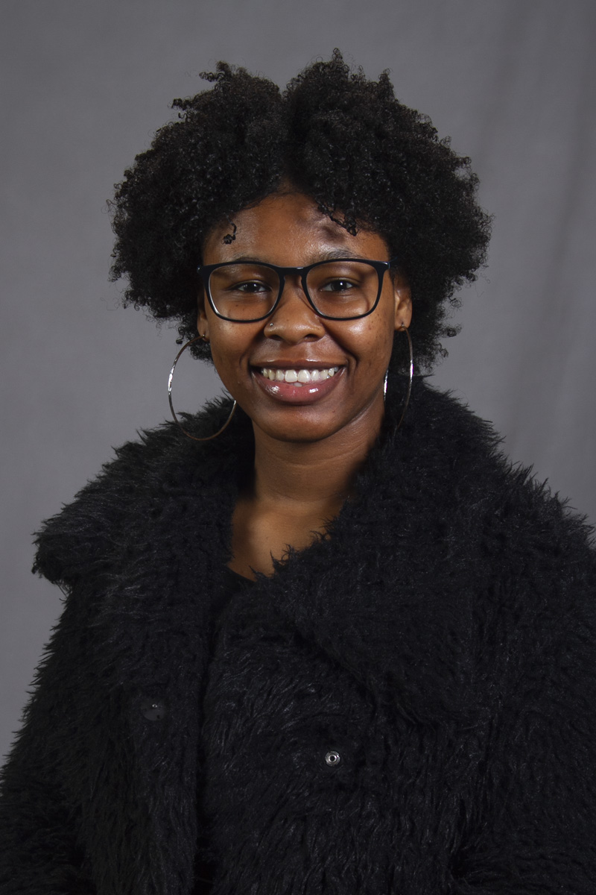

 My name is Sydni Curry and I am an Information Science student at the University of Arkansas at Little Rock. I have experience with several different programming languages such as C++, HTML, and SQL to name a few. I am also minoring in Innovation and ENtrepreneurship, so I have picked up a few business skills such as accounting, time management, and data entry.I am currently a Technical Assistant at the University of Arkansas Cooperative Extension Service. Being an employee here has allowed me to develop new skills such as Web Accessibility and Web application programming, along with experience in technical support. I hope to learn a few more programming languages as well at more technical skills in the near future.
You are welcome to download my resume in either Microsoft Word or PDF format.
February 2020 - Present
Responding to service requests via Bomgar, phone, email, or in person.
Dear sir or madam,
As a Senior at the University of Arkansas, I am constantly learning things about the Information Science career path. Along with these skills, I have also learned business savvy skills such as customerservice, management, accounting, and much more. My educational and personal background aligns wellwith the qualifications you are seeking at your company. I am certain that I would make a valuable addition to your organization.
I am proficient in Microsoft Suites, and I am a very swift learner. I have experience with C++, Java, SQL, HTML, CSS, and JavaScript programming along with Project management. I am currently taking classes that will improve my knowledge about developing, implementing, maintaining, and testing software applications. I do not have much work experience, but I have lots of volunteer experience from being a part of the Chancellor’s Leadership Scholarship Program, and I’m always open to learning a new skill.
I have a passion for helping others. I am extremely enthusiastic about your focus on providing customers with services and products that will better their lives. I have volunteered at many nonprofit organizations, so I know the joy that comes with making a difference in someone’s life. I would welcome the opportunity to contribute to your ongoing growth and success.
Thank you for your consideration and for your time. I look forward to the opportunity of speaking with you soon.
Sydni Curry
109 Ouachita 363
Camden,AR 71701
smcurry@ualr.edu
Phone: (870)675-6555
Email: smcurry@ualr.edu
Address: 109 Ouachita 363, Camden, AR 71701